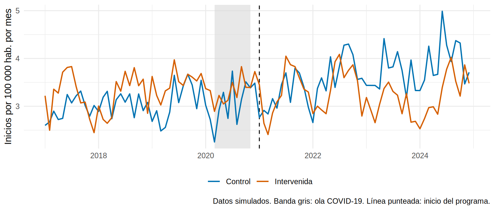
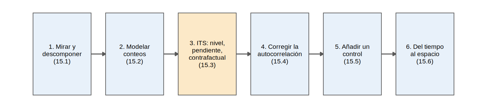

Capítulo 15: Series de tiempo (y una mirada a los datos geoespaciales)
“Un mes se parece a los meses vecinos; un distrito se parece a los distritos vecinos.” Casi todo lo que hemos hecho supone que las observaciones son independientes. En una serie de tiempo y en un mapa, no lo son, y esa dependencia es a la vez un problema (los errores estándar se vuelven optimistas) y una oportunidad (la serie se compara consigo misma para evaluar políticas).
Nota🩺 El problema de todos los días
Tu región lanzó en enero de 2021 un programa de detección temprana de ERC. Tienes los inicios de diálisis de cada mes desde 2017, en tu región y en una vecina sin programa. Entre meses de invierno, una pandemia y una población que envejece, ¿cómo separas el efecto del programa? Y cuando la dirección te pide un mapa de dónde hay más pacientes en diálisis, ¿por qué algunos distritos pequeños aparecen como “focos” que quizá no lo son?
Este capítulo usa dos bases simuladas (con la verdad conocida, para comprobar cada método):
serie_inicio_dialisis: inicios mensuales de diálisis de enero de 2017 a diciembre de 2024 (96 meses) en dos regiones, con población (para calcular tasas). Tienen tendencia, estacionalidad (más ingresos a mitad de año), una ola COVID-19 en 2020 y autocorrelación. En la región Intervenida, un programa empieza en el mes 49 (enero de 2021) y produce un cambio de nivel y un cambio de pendiente que conocemos. La región Control no tiene programa.
distritos_erc: 60 distritos inventados (polígonos generados con código) con pacientes en diálisis, población, pobreza y distancia al centro de diálisis; la tasa está espacialmente agrupada y hay un foco de alta carga.
library(tidyverse)source("R/funciones_extra_cap15.R")serie<-read_csv("Bases/serie_inicio_dialisis.csv", show_col_types =FALSE)ggplot(serie|>preparar_serie(), aes(fecha, tasa, colour =region))+annotate("rect", xmin =as.Date("2020-03-01"), xmax =as.Date("2020-10-31"), ymin =-Inf, ymax =Inf, fill ="grey85", alpha =0.6)+geom_vline(xintercept =as.Date("2021-01-01"), linetype ="dashed")+geom_line(linewidth =0.7)+scale_colour_manual(values =c(Intervenida ="#D55E00", Control ="#0072B2"), name =NULL)+labs(x =NULL, y ="Inicios por 100 000 hab. por mes", caption ="Datos simulados. Banda gris: ola COVID-19. Línea punteada: inicio del programa.")+theme_minimal(base_size =11)+theme(legend.position ="bottom")

A ojo se ve la onda anual, la subida lenta y que, tras el programa, la región intervenida se aplana mientras la control sigue subiendo. Cuantificar cuánto de ese aplanamiento es programa, con qué incertidumbre y bajo qué supuestos, es lo que hacemos en los subcapítulos 15.1 a 15.5. El 15.6 da el salto del tiempo al espacio.
Al finalizar este capítulo podrás:
Reconocer y descomponer los componentes de una serie (tendencia, estacionalidad, ruido) y evitar la trampa de comparar un mes con el anterior.
Modelar conteos en el tiempo (Poisson, quasi-Poisson, binomial negativa) con estacionalidad y población como offset.
Evaluar una política con una serie temporal interrumpida (ITS): cambio de nivel y de pendiente, contrafactual y casos evitados.
Detectar y corregir la autocorrelación (errores HAC y modelos ARIMA) y pronosticar evaluando con datos no usados.
Añadir un grupo control (diferencias en diferencias, ITS controlada) y comprobar las tendencias paralelas.
Hacer mapas con sf, medir autocorrelación espacial (I de Moran, LISA) y suavizar tasas de distritos pequeños.

Importante🎯 Mapa del capítulo
Subcapítulo
Nivel
Resuelve
15.1 Componentes de una serie
🟢
Tendencia, estacionalidad, ciclo y ruido; descomposición STL
15.2 Modelos para conteos
🟡
Poisson, sobredispersión, armónicos, offset de población, proyección
15.3 Serie temporal interrumpida
🟡
Evaluar una política: nivel, pendiente, contrafactual, amenazas
15.4 Autocorrelación y estacionalidad
🔴
ACF/PACF, errores HAC, ARIMA, pronóstico y su evaluación
15.5 Serie con grupo control
🔴
Diferencias en diferencias, ITS controlada, tendencias paralelas
15.6 Datos geoespaciales
🟡
Mapas con sf, I de Moran, LISA, suavizado de tasas
Prerrequisitos: Caps. 2, 8 (Poisson y offset) y 12 (contrafactual). Prepara: Cap. 19 (diferencias en diferencias y diseños cuasi-experimentales).
Para leer más
Hyndman RJ, Athanasopoulos G.Forecasting: Principles and Practice (3.ª ed.). OTexts; 2021. https://otexts.com/fpp3/. Lectura recomendada por el autor (no se pudo consultar durante la redacción). Libro gratuito en línea; por lo general cubre la descomposición de series, el suavizado exponencial, los modelos ARIMA y la evaluación de pronósticos. Complementa 15.1 y 15.4.
An Introduction to Spatial Data Analysis and Visualisation in R (Consumer Data Research Centre, CDRC). https://data.geods.ac.uk/dataset/an-introduction-to-spatial-data-analysis-and-visualisation-in-r. Lectura recomendada por el autor (no se pudo consultar durante la redacción). Curso sobre datos espaciales y su visualización en R; complementa 15.6.
Bernal JL, Cummins S, Gasparrini A. Interrupted time series regression for the evaluation of public health interventions: a tutorial. Int J Epidemiol. 2017;46:348-355. Tutorial breve y claro de 15.3.
Bernal JL, Cummins S, Gasparrini A. The use of controls in interrupted time series studies of public health interventions. Int J Epidemiol. 2018;47:2082-2093. Sobre 15.5.
Schaffer AL, Dobbins TA, Pearson SA. Interrupted time series analysis using autoregressive integrated moving average (ARIMA) models: a guide for evaluating large-scale health interventions. BMC Med Res Methodol. 2021;21:58. Guía del enfoque ARIMA de 15.4.
Pebesma E, Bivand R.Spatial Data Science: With Applications in R. CRC Press; 2023 (versión gratuita en https://r-spatial.org/book/). Referencia de sf y spdep para 15.6.
Referencias
Cleveland RB, Cleveland WS, McRae JE, Terpenning I. STL: a seasonal-trend decomposition procedure based on loess. J Off Stat. 1990;6:3-73.
Bhaskaran K, Gasparrini A, Hajat S, Smeeth L, Armstrong B. Time series regression studies in environmental epidemiology. Int J Epidemiol. 2013;42:1187-1195.
Wood SN. Generalized Additive Models: An Introduction with R (2.ª ed.). CRC Press; 2017.
Muggeo VMR. Estimating regression models with unknown break-points. Stat Med. 2003;22:3055-3071.
Ljung GM, Box GEP. On a measure of lack of fit in time series models. Biometrika. 1978;65:297-303.
Durbin J, Watson GS. Testing for serial correlation in least squares regression. I. Biometrika. 1950;37:409-428.
Newey WK, West KD. A simple, positive semi-definite, heteroskedasticity and autocorrelation consistent covariance matrix. Econometrica. 1987;55:703-708.
Zeileis A. Econometric computing with HC and HAC covariance matrix estimators. J Stat Softw. 2004;11(10):1-17.
Zeileis A, Köll S, Graham N. Various versatile variances: an object-oriented implementation of clustered covariances in R. J Stat Softw. 2020;95(1):1-36.
Box GEP, Jenkins GM, Reinsel GC, Ljung GM. Time Series Analysis: Forecasting and Control (5.ª ed.). Wiley; 2015.
Hyndman RJ, Khandakar Y. Automatic time series forecasting: the forecast package for R. J Stat Softw. 2008;27(3):1-22.
Hyndman RJ, Koehler AB. Another look at measures of forecast accuracy. Int J Forecast. 2006;22:679-688.